Contents & condition key
Condition: New · Excellent · Good (sound, light wear)
· Fair (visible wear or marks) · Poor (damaged or heavily worn).
Cleanliness: Professionally cleaned · Cleaned to domestic
standard · Requires cleaning.
This report records the contents and internal condition of the property at the date of inspection, supported by the embedded photographs. Original image files are identified by SHA-256 checksum in Appendix A; any party holding the original files can re-compute the checksums to confirm the photographic record is unaltered.
1. Kitchen
| Ref | Item | Description | Condition | Cleanliness | Defects noted | Photos |
|---|---|---|---|---|---|---|
| KIT-001 | Window | Detected automatically (30% confidence). Review and add material/colour details. | — | — | P001 |
Photographs — Kitchen
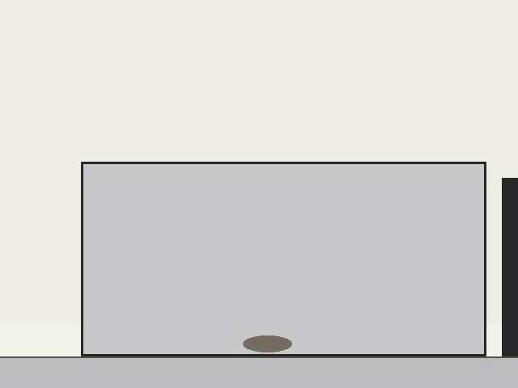
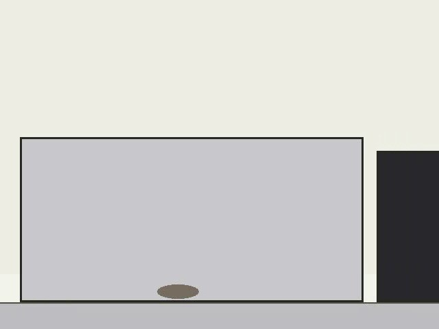
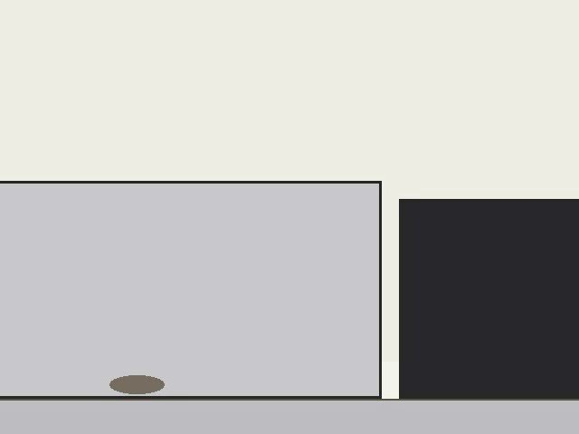
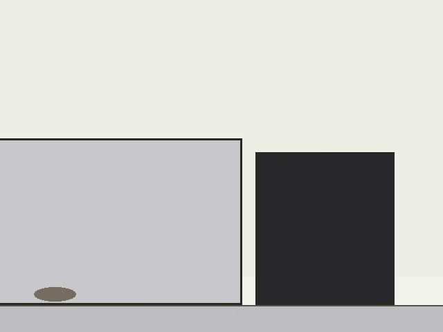
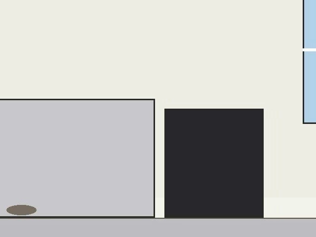
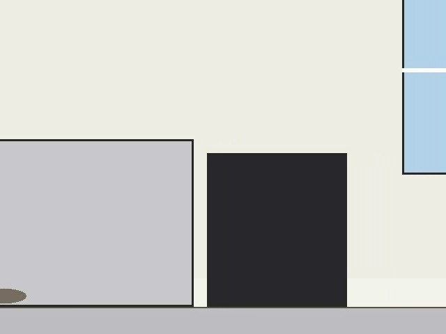
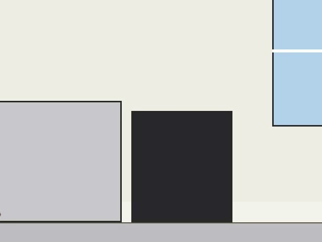
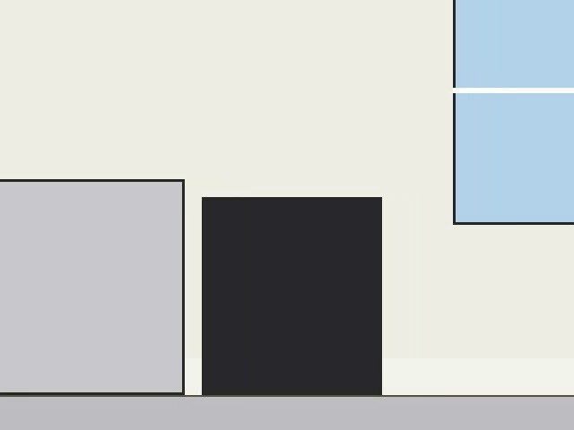
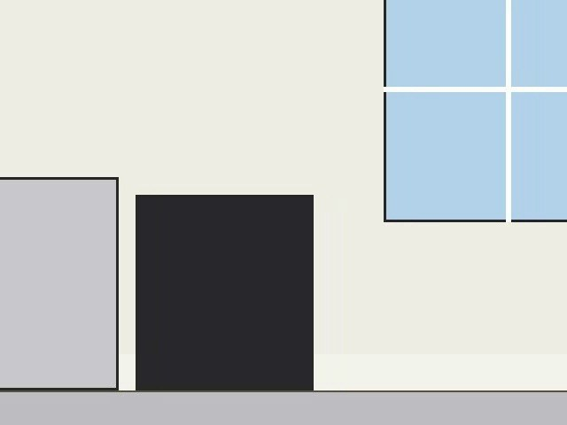
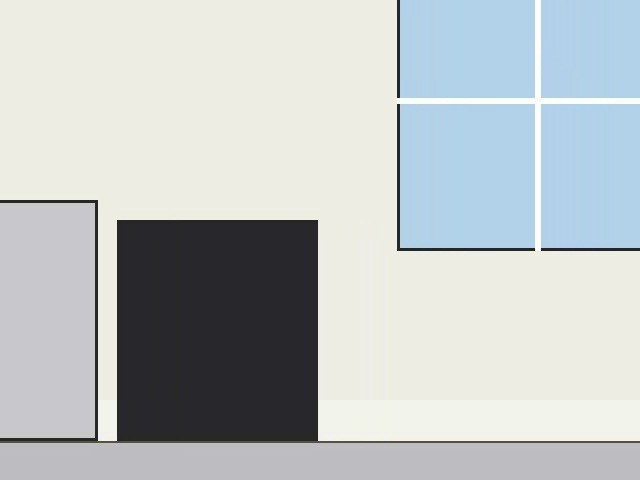
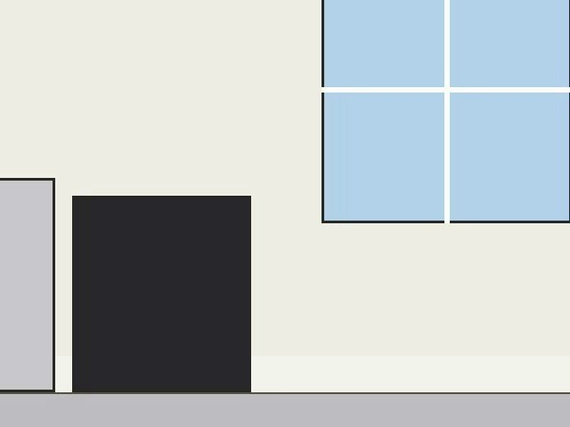
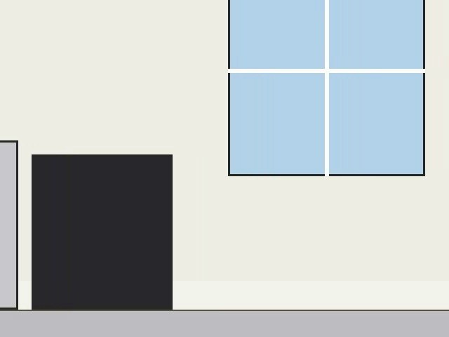
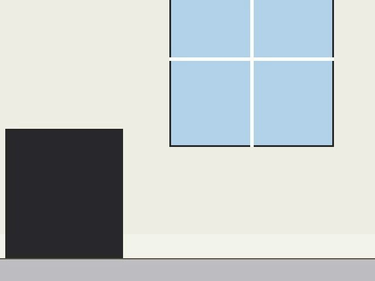
2. Living Room
| Ref | Item | Description | Condition | Cleanliness | Defects noted | Photos |
|---|---|---|---|---|---|---|
| LIV-001 | Walls | Emulsioned off-white walls. | good | cleaned to domestic standard |
|
P001 |
| LIV-002 | Three-seat sofa | Blue fabric three-seat sofa. | good | cleaned to domestic standard | P001 |
Photographs — Living Room
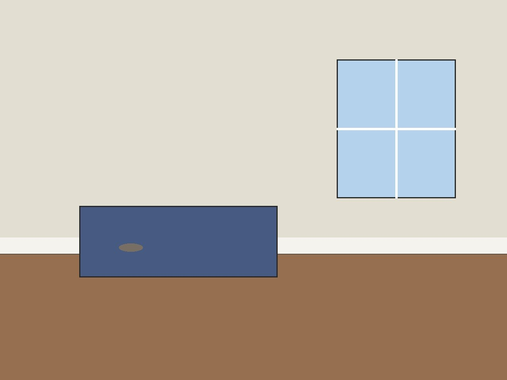
Appendix A — Photographic evidence manifest (SHA-256)
| ID | Room | File | Captured | SHA-256 |
|---|---|---|---|---|
| P001 | Kitchen | Kitchen/kitchen_a.jpg | — | a4c17108a57f0fb229bf28c6c2a6b04e… |
| P002 | Kitchen | /tmp/fixture/report/work/frames/Kitchen/pan_f000001.jpg | — | 427cd62db586705e0bd3c91ce1414a08… |
| P003 | Kitchen | /tmp/fixture/report/work/frames/Kitchen/pan_f000011.jpg | — | 88a77141c05927cc15f4af5b4d313c55… |
| P004 | Kitchen | /tmp/fixture/report/work/frames/Kitchen/pan_f000026.jpg | — | 24a7252ff7c6d1420d997efe53f49e3c… |
| P005 | Kitchen | /tmp/fixture/report/work/frames/Kitchen/pan_f000036.jpg | — | de11b9ce524dce23348a00814ec2c794… |
| P006 | Kitchen | /tmp/fixture/report/work/frames/Kitchen/pan_f000041.jpg | — | 69210b3f37a890d5ada3188be66f7cb5… |
| P007 | Kitchen | /tmp/fixture/report/work/frames/Kitchen/pan_f000046.jpg | — | 0c1bd9dd2eaf6dd1b5fc74ed24b5e821… |
| P008 | Kitchen | /tmp/fixture/report/work/frames/Kitchen/pan_f000051.jpg | — | 013fc2f844fb120c16ec5ba9d88f3a73… |
| P009 | Kitchen | /tmp/fixture/report/work/frames/Kitchen/pan_f000056.jpg | — | b945eb54d25db09698d8af6ce1284a48… |
| P010 | Kitchen | /tmp/fixture/report/work/frames/Kitchen/pan_f000061.jpg | — | 118715f234e62be99b154adad19d1dbd… |
| P011 | Kitchen | /tmp/fixture/report/work/frames/Kitchen/pan_f000066.jpg | — | dbcbdbb68140e64b0116d26f1e0e5505… |
| P012 | Kitchen | /tmp/fixture/report/work/frames/Kitchen/pan_f000071.jpg | — | e1ad424ed78db25ae4c5e233cf6f084b… |
| P013 | Kitchen | /tmp/fixture/report/work/frames/Kitchen/pan_f000076.jpg | — | 36b41e87b0565349496295acfe35e99f… |
| P014 | Kitchen | /tmp/fixture/report/work/frames/Kitchen/pan_f000081.jpg | — | f3cd30e754b749d1e1a5d8ea7ab9dab1… |
| P015 | Kitchen | /tmp/fixture/report/work/frames/Kitchen/pan_f000086.jpg | — | f2fcef1efa58b368be3d97d4f414c0e2… |
| P016 | Living Room | Living Room/wall_a.jpg | — | 7cd273b17a1e842ea82d468ab5f77a15… |
| P017 | Living Room | Living Room/wall_b.jpg | — | 3348c89bc65e538867b588c23a89a15f… |
Declaration
This inventory was prepared with AI assistance and has been reviewed for accuracy by the undersigned. It provides a fair and accurate record of the contents and internal condition of the property on the date stated. Unless amendments are notified in writing within 7 days of receipt, this inventory will be deemed accepted by all parties.